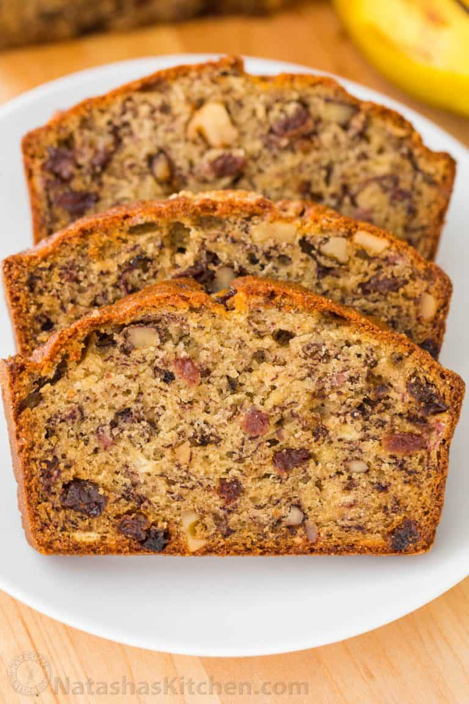

World's Best Lasagna

An easy and moist Banana Bread Recipe that is loaded with bananas, tangy-sweet raisins, and toasted walnuts. This is one of our favorite overripe banana recipes with hundres of 5-star reviews.
Submitted by: Natashas Kitchen
Prep Time: 10 mins
Cook Time: 1 hr
Total Time: 1 hr 10 mins
Servings: 10
Ingredients
- 3 very ripe bananas, (medium/large)
- 1/2 cup unsalted butter, (8 Tbsp) at room temperature
- 3/4 cup granulated sugar
- 2 large eggs, lightly beaten
- 11/2 cups all-purpose flour
- 1 tsp baking soda
- 1/2 tsp salt
- 1/2 tsp vanilla extract
- 1 cup walnuts
- 1/2 cup raisins
Directions
- Step 1
- Preheat the oven to 350°F. Grease and flour a bread loaf pan (9.25 long x 5.25 wide x 2.75 deep). Lightly roast walnuts on a skillet, continuously stirring so they won’t burn. Coarsely chop and cool to room temperature.
- Step 2
- In a mixing bowl, cream together 8 Tbsp softened butter and 3/4 cup sugar (or honey if using honey).
- Step 3
- Mash bananas with a fork until the consistency of chunky applesauce and add them to the batter along with 2 eggs, mixing until blended.
- Step 4
- In a separate bowl, whisk together: 1 1/2 cups of flour, 1 tsp of baking soda and 1/2 tsp of salt then add to batter.
- Step 5
- Add 1/2 tsp of vanilla extract and mix in chopped walnuts and raisins. Pour into prepared loaf pan. Bake at 350˚F for 55-60 min or until a toothpick inserted into the center comes out clean. Let banana bread rest for 10 min before transferring to a wire rack to cool.
Nutrition Facts
Per serving: Calories 350kcal; Carbohydrates 45g; Protein 5g; Fat 18g